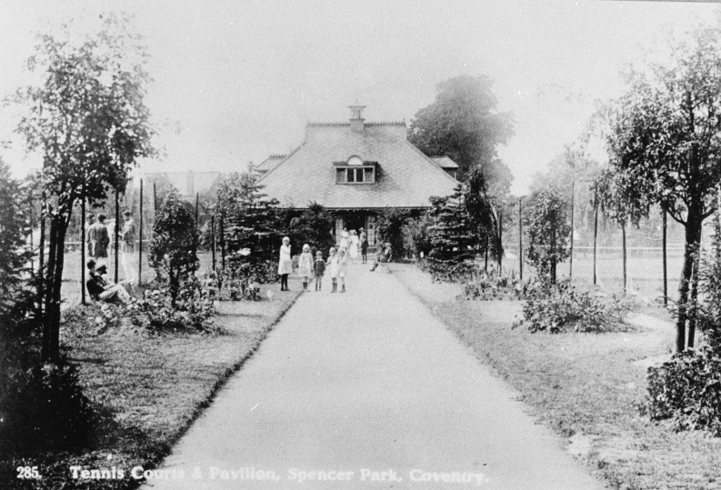
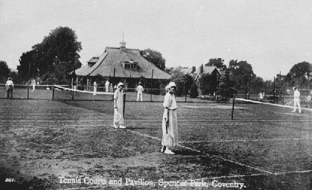
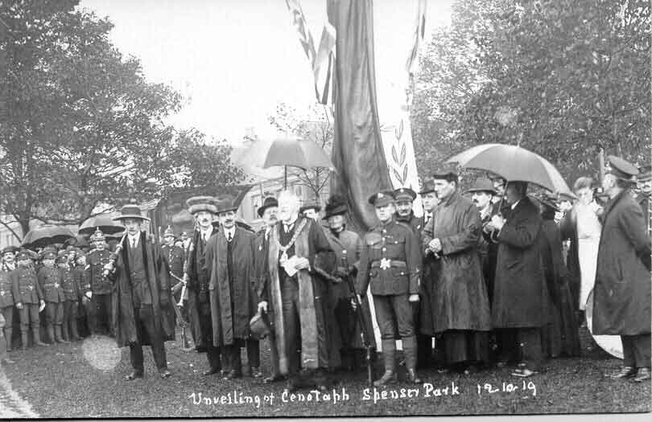
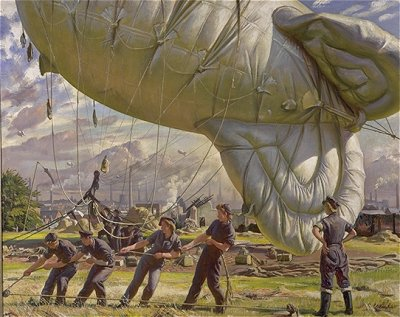

Spencer Park The city owes a debt of gratitude to Coventry benefactor David Spencer, for the gift of land for Spencer Park which opened in 1883. He had acquired land in Earlsdon which he donated for a park long before he died in 1888. David Spencer is commemorated by a memorial which says: "This tree was planted in 1925 in memory of David Spencer (1805-1888) a generous benefactor of Coventry who presented this park to the people of Coventry City in 1852." The story goes that in the mid 19th Century the City Council was looking for an area of public land on which they could create a city park. Part of Stivichale Common was eventually identified and work began on a 4 acre site on Warwick Road, which is now known as Top Green. David Spencer believed the area could be improved if the space was increased to provide a good sized recreation ground and he offered the city council 4,000 Guineas to pay for it if they would complete the project. However, the owners of the adjoining land would not sell. Instead another area of land was found in the form of a large meadow of just over 7 acres which belonged to the Grammar School Trustees. They had bought the land in order to build the new King Henry VIII Grammar School, but this area of meadow was surplus to their needs. The Trustees were glad to sell as the proceeds enabled them to begin their building project earlier than originally envisaged. In addition to the 7 acre meadow a further small field of 3 acres or so was also bought from Mr RA Dalton who was the owner of a large chunk of the surrounding land. This was later to become the Bowling Green and Tennis Court area. An agreement was also entered into by the Council with the city Freeman's Trustees whereby a new road was to be cut from Warwick Road to the Freeman's land at Earlsdon, this was to become Spencer Road. This was to compensate for the common rights they were losing by the regulation of Stivichale Common and would give them better access between Earlsdon and the railway station and the city. Finally, an extra wedged shape area called Quarry Close, next to the railway line, was also bought from the John Worth estate. This would give access for Earlsdon folk from the Earlsdon Jetty (Albany Road was not built for another 15 years). On 19 December 1882 there was an official handing over ceremony and a luncheon held in celebration hosted by the mayor and attended by the Corporation, Mr Spencer and many other local worthies. The mayor proposed a toast to Mr David Spencer saying he was “the truest and most generous benefactor, who in his own lifetime at his own expense bestows his bounty for the benefit of his fellows”. By 1894 a “gymnasium”, as it was called, consisting of swings, roundabouts, slides, see-saws and climbing frames was erected for the children. This was followed some years later by the bowling greens and tennis courts and the pavilion, designed by the City Engineer and opened in August 1915. 
Originally the park stretched from the railway bridge (the iron part of which was constructed in the 1850s to maintain a public right of way through the new railway marshalling and goods yard) to Dalton Road, unbroken by what is now Spencer Avenue. The section of road that runs through the park was added in the early 1900's to link the existing Spencer Road with Albany Road.  Close to the footpath alongside Spencer Avenue a small stone acts as a reminder of the Cenotaph unveiled on 12th October 1919. The Cenotaph was erected after the ceremony depicted in this postcard but was removed when the City's war memorial was unveiled in War Memorial Park. At the same time an oak was planted that had been grown from an acorn gathered at Verdun in 1916. This original ceremony in 1919 was Coventry's first attempt at a memorial to its dead from the First World War. Despite being performed in very poor weather the ceremony was reportedly attended by thousands who gathered after a procession from Pool Meadow. They collected the Mayor and sword and mace bearers on the way past the Council House. The Mayor, who performed the unveiling ceremony, referred to the cenotaph, not unkindly, as ‘quite home-made affair' as it was constructed of wood in the form of an obelisk surmounted by a cross painted in black and white. It had been designed, built and paid for by discharged soldiers. Clearly a larger memorial had not been planned at this stage as it was hoped that the wooden cenotaph would be replaced by an identical stone one.  Spencer Park was the subject of a painting by British war artist Dame Laura Knight. 'The Barrage Balloon' depicts members of the ATS preparing a barrage balloon in Spencer Park during the Second World War. The Coventry skyline can be seen in the background. |